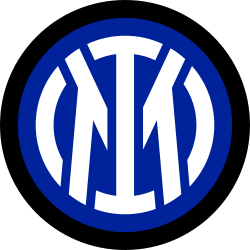

Inter de Milán

Historia
El Football Club Internazionale Milano nace en el "Ristorante Orologio" (Restaurante Reloj), el 9 de marzo de 1908 en Milán siguiendo el cisma de (44 miembros) disidentes del Milan Football and Cricket Club (A. C. Milan). El nombre del club deriva de la voluntad de los socios fundadores de aceptar no solo a jugadores italianos sino también a extranjeros (muchos de los cuales eran suizos que estaban trabajando en la banca local), y por esta cualidad tomaron su denominación de Football Club Internazionale. Giovanni Paramithiotti, un veneciano, fue elegido presidente, y el primer capitán fue el suizo Ernst Manktl. Los colores del club ya eran azul-negro en ese momento. El primer escudo de armas (con las iniciales FCIM) fue diseñado por Giogio Muggiani durante la mencionada reunión de fundación. Otro símbolo de "Internazionale" era el escudo de armas de la antigua familia gobernante de Milán, los Visconti. Mientras que el A. C. Milan era la asociación de trabajadores en los primeros días, el Inter se convirtió en una asociación de ciudadanos, artistas e intelectuales. En la temporada 1909-10 el equipo gana su primer scudetto Habiendo empatado a 25 puntos al final del campeonato con US Pro Vercelli, Se jugaría un partido de desempate por el título. El Vercelli pidió postergar la fecha del 17 abril al 1 de mayo este equipo estaba jugando de forma simultánea un torneo militar y el Inter había ya programado una gira para ese mes. La federación italiana de fútbol aceptó el cambio pero para el 24 de abril y no el 1 de mayo. Los piamonteses en señal de protesta enviaron a jugar a un equipo de las categorías inferiores. El resultado del desempate fue una goleada, 10 a 3; la federación italiana condenó por conducta antideportiva al US Pro Vercelli. En 1914-15 el campeonato italiano es obligado a detenerse tras el estallido de la Primera Guerra Mundial; el torneo es reanudado para 1919-20 en esta temporada Inter conseguiría su segundo scudetto ganado el grupo A Lombard first category, también triunfó en el grupo C de las semifinales nacionales y llegó a las finales del norte donde venció a la Juventus y Genoa así obtuvo el título del norte. Finalmente el 20 junio enfrentó al campeón del sur Livorno, el Nerazzurri gana la final italiana 3-2 en Bolonia. En el campeonato 1926-27 el Inter llegó primero en igualdad de condiciones con la Juventus en el grupo A, pero en la ronda final el equipo milanés quedaría quinto, sin embargo el campeonato ganado por Torino se consideró nulo por ofensa deportiva. En esta temporada el Inter debutó en la Copa Italia llegando solo a tercera ronda; en 1927-28 clasificó nuevamente a la ronda final esta vez terminaría séptimo. En esta temporada debutaría Giuseppe Meazza de diecisiete años, marcando 12 goles.
Símbolos
Uno de los socios fundadores del Inter, pintor reconocido llamado Giorgio Muggiani, fue quien diseñó el primer escudo del equipo en el año 1908. Este diseño incorporó las siglas "FCIM" (debido a las iniciales del club) en el centro de una serie de círculos que forman el escudo del club. Si bien el Inter ha utilizado diferentes escudos con muy diversos diseños a lo largo de su historia, los elementos básicos del diseño de Muggiani se han mantenido constantes y son los que actualmente utiliza el club. En 2007, el escudo regresó al diseño que tenía en la época anterior a la temporada 1999-2000, pero se le dio un diseño más moderno a la vez que se sobrepuso una estrella (para simbolizar los diez scudetti) con una combinación de colores más claros. Este diseño se utilizó hasta el final de la 2013-14, cuando el club decidió retirar la estrella del escudo pero sí incluirla en el uniforme.[75][76] 2021 Inter anuncia el nuevo logo fijándose en los valores históricos diseñando dos elementos : la I de Internazionale y la M de Milán la elección de colores en blanco, negro y azul más intenso. El oro esta previsto para los materiales más icónicos "nuestros colores siguen siendo los de el cielo y la noche del 9 de marzo de 1908". Los animales se utilizan a menudo para representar a los clubes de fútbol en Italia, la culebra de collar, llamado Biscione o SERPENTINA (vipera) representa al Inter. La serpiente es un símbolo importante para la ciudad de Milán, ya que aparece con frecuencia en su heráldica como una víbora enrollada con un hombre en sus mandíbulas. El símbolo es famoso por su presencia en el escudo de armas de la casa de Sforza (que gobernó a Milán durante la época del Renacimiento), la ciudad de Milán, el Ducado de Milán (en el siglo XIV, un estado del Sacro Imperio Romano), e Insubria (zona histórica regional dentro de la cual se encuentra la ciudad). El Biscione fue parte del escudo que utilizó el club entre 1979 y 1988, y también aparecía en el uniforme de visitante que el equipo utilizó para la temporada 2010/11.[77
Uniforme
Desde su fundación en 1908 el Inter ha utilizado rayas verticales azules y negras en su camiseta. El azul representa el cielo y el negro la noche, esto a raíz de unas líneas escritas el día de la fundación del club, elegidos por Giorgio Muggiani, diseñador y miembro fundador del club. Durante un breve período entre 1928 y 1929, el Inter se ve obligado a fusionarse con la Unione Sportiva Milanese, modificando también su nombre y su camiseta, que pasa a ser blanca con una cruz roja en el pecho, en honor a la bandera de la ciudad de Milán. Desde el campeonato siguiente, vuelve a utilizar las rayas verticales negras y azules. A partir de la temporada 1966-67 el Inter adopta el uso de la Estrella de Oro al Mérito Deportivo, que utiliza sobre su escudo. La estrella representa la victoria de 10 campeonatos italianos de Serie A. El uniforme alternativo desde 1910 es tradicionalmente blanco con detalles azules y negros. En la temporada 2007-08 el club celebró su centenario utilizando como segunda camiseta aquella histórica de la Sociedad Ambrosiana, la de la cruz roja sobre fondo blanco. Para la Copa de la UEFA 1997-98, ganada por el Inter, usó una camiseta con rayas azules y negras horizontales,[78] modelo repetido para la UEFA Champions League 2004-05.[79] Desde 2014 en adelante es costumbre que el equipo presente una tercera camiseta, la cual ha utilizado diversos colores como celestes, amarillos o negros, entre otros.[80][81
Estadio
El Stadio Giuseppe Meazza, también conocido como Stadio Calcistico San Siro, fue fundado el 19 de septiembre de 1926 en via Piccolomini, 5 (20151 distrito del barrio de San Siro en Milán), habiéndose iniciado su construcción en 1925 y por iniciativa del entonces presidente de la Associazione Calcio Milan, Pietro Pirelli. La propiedad del mismo era del club milanista hasta que en 1935 transfirió la propiedad al gobierno municipal y en 1947 el club interista pasó a disputar sus encuentros en el recinto, compartiendo ambos localía. La estructura corrió por cuenta del ingeniero Alberto Cugini y del arquitecto Ulisse Stacchini. El estadio estaba compuesto por cuatro tribunas rectilíneas y podía albergar a 35 000 espectadores. El partido inaugural fue disputado entre ambos conjuntos, con victoria 3-6 para i nerazurri. En el citado año 1935 se realizó además su primera modificación al ampliar la capacidad de aforo a 55 000 espectadores. La segunda ampliación (a manos del ingeniero Ferruccio Calzolari y del arquitecto Armando Ronca) se produjo en 1955 con una transformación drástica. La capacidad total alcanzaba los 100 000 espectadores, pero se limitó a casi 86 000 por cuestiones de seguridad. La última gran modificación se concretó para la Copa Mundial de 1990. En la actualidad, el estadio cuenta con una capacidad de 85 700[82] espectadores y dimensiones de 105x68 metros, siendo el estadio más grande de Italia, el tercero en Europa y el décimo a nivel Mundial. Es además, considerado por la UEFA, como uno de los estadios de máxima categoría. El recinto es de propiedad municipal y se renombró en honor a Giuseppe Meazza, jugador italiano que militó en ambas escuadras. El Nerazzurri y Rossonero se juntan para comprar el Giuseppe Meazza con el área aledaña barrio San Siro después de negociaciones y votación en septiembre del 2025 el ayuntamiento de la ciudad de Milán confirma la venta por 197 millones de euros, en noviembre se realiza la transacción para dar inicio al proyecto que superara los 1200 millones de euros donde el nuevo estadio tendrá una capacidad de 71 500 espectadores y se renovara el área aledaña será encargada por los estudios de Foster+partners y Arquictectura Manica.
Rivalidades
Derbi de Milán
Inter y Milan han disputado encuentros desde el 18 de octubre de 1908. El primer derbi, amistoso, se jugó en Chiasso, Suiza. El 29 de junio de 1969, después de más de 60 años, se volvió a repetir el hecho de jugar el derbi de Milán en el extranjero; aquel encuentro, también amistoso, se disputó en el Yankee Stadium de Nueva York, en el ámbito del "Torneo Ciudad de Nueva York". La historia del derbi evidencia que el Milan dominó al Inter hasta 1929. Por el contrario, en su periodo de oro, el Inter tuvo un gran predominio sobre su histórico rival durante casi 10 años. En 32 de los 64 campeonatos desde que la Serie A está compuesta de un solo grupo, el Inter ha estado siempre por delante de los rossoneri en la clasificación, sin tener en cuenta las temporadas en las que el Milan bajó a Serie B (1980-81 y 1982-83).
El Derbi de Italia
Inter y Juventus han disputado un total de 216 encuentros oficiales. El primer encuentro entre ambos clubes se disputó en 1909 y el uso del término derbi para este compromiso fue acuñado en 1967 por el periodista italiano Gianni Brera. Ambos son dos de los clubes con mayor palmarés en Italia, tanto a nivel nacional como internacional, además de atraer la simpatía de un gran número de aficionados.[100] Sus duelos son quizá el clásico del fútbol italiano más intenso disputado entre dos equipos de diferentes ciudades.[cita requerida] El partido poseía hasta 2006 el atractivo de enfrentar a las dos únicos clubes que nunca habían sido relegados de la Serie A (antes del escándalo de «Calciopoli» en el que Juventus fue sentenciado al descenso). A la fecha de 2020 no se han enfrentado en competiciones europeas, perteneciendo todos sus encuentros a las competiciones nacionales.